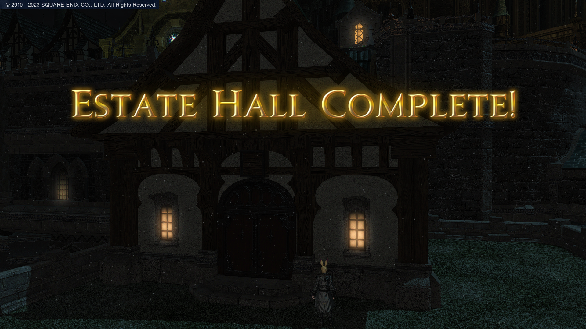
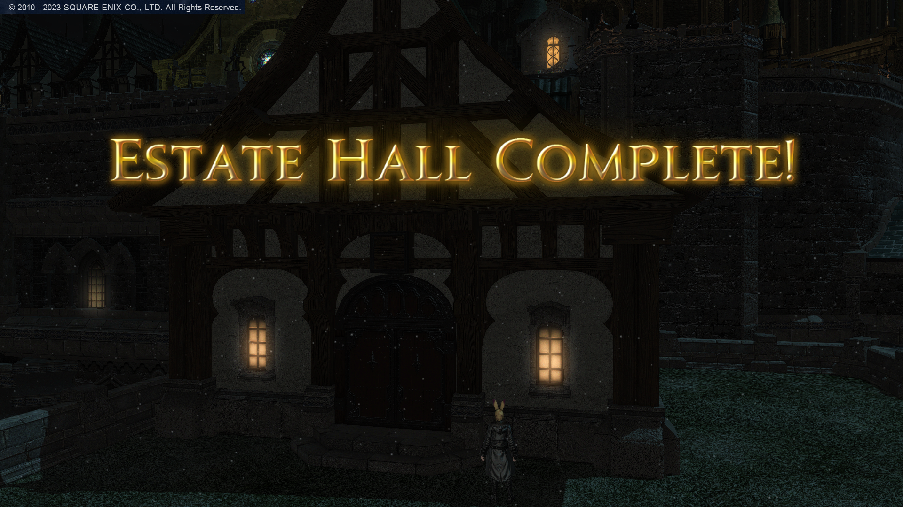

Uma das atividades que mais gosto de fazer atualmente é decoração da minha casa. Já tive uma mais simples, mas meu gosto pelo estilo oriental falou mais alto, então não pensei duas vezes e refiz a decoração. Gastei todo meu gil, mas fiquei muito satisfeito com o resultado final.
A seguir, apresentarei uma série de imagens que fiz desde quando adquiri o terreno.
 



Assim como todos, eu gosto de uma boa festa. Já fui a festas juninas, participei de sorteio do Jumbo Cactpot (a Mega-Sena de Eorzea), só não fui à casamento (ainda). A última empreitada é fazer a festa dos Loporrits.